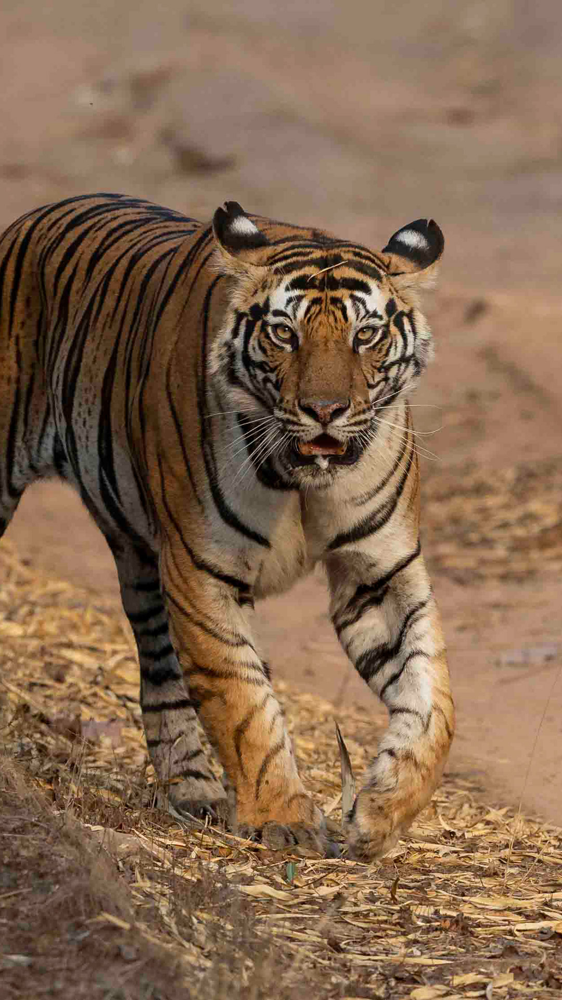

After a century of decline, overall wild tiger numbers are starting to tick upward.
Based on the best available information, tiger populations are stable or increasing
inIndia, Nepal, Bhutan, Russia, and China. About 5,574 tigers remain in the wild,
according to the Global Tiger Forum, but much more work is needed to protect this
species if we are to secure its future in the wild. In some areas, including much
of Southeast Asia, tigers are still in crisis and declining in number.